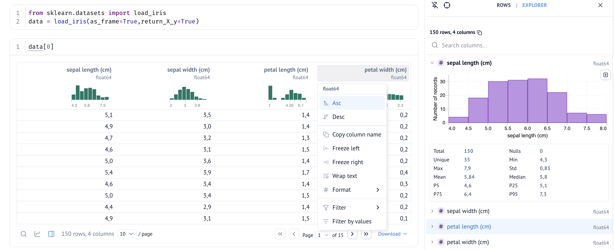
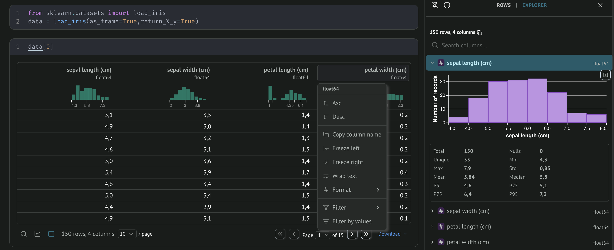

Notebooks
En R, tu as probablement utilisé R Markdown ou Quarto. Python a son équivalent historique : Jupyter.
Alors pourquoi une autre librairie de notebooks alors que Jupyter existe, et qu'il sert autant pour R que pour Python ?
Critiques de Jupyter
Le notebook Jupyter est un outil où la flexibilité prime, c'est formidable pour l'exploration rapide, l'apprentissage ou le prototypage. Pourtant, cette liberté a un coût. Dès que le code gagne en complexité ou s’intègre à un workflow de production, elle se transforme en contrainte, minant la reproductibilité et favorisant les mauvaises pratiques de code.
- État caché et ordre d'exécution Les cellules Jupyter peuvent être exécutées dans n'importe quel ordre, ce qui crée un problème subtil :
Si je modifie a = 5 dans la cellule 1 sans réexécuter la cellule 2, le notebook affiche toujours b = 20, une valeur qui ne correspond plus au code visible. C'est le hidden state : l'état réel du kernel diverge silencieusement de ce qu'on lit.
Concrètement, ça mène à un pattern fréquent : les premières cellules tournent bien, on modifie des valeurs au fil de l'exploration, et à un moment le notebook retourne une erreur ou un résultat inattendu, sans qu'on sache exactement quelle combinaison de cellules avait produit le bon résultat.
-
Reproductibilité :
C'est la conséquence directe de l'état caché : relancer le même notebook du début à la fin peut produire des résultats différents de ceux affichés, voire planter. Ça demande une discipline constante pour s'assurer que les cellules sont dans le bon ordre et que les variables sont dans l'état attendu. -
Git diff illisible :
Le format.ipynbmélange code et outputs sérialisés en JSON, ce qui rend les diffs quasiment inexploitables pour une revue de code.
S'inspirant de Jupyter et de ses problèmes, des alternatives ont vu le jour, proposant un outil moins permissif pour atténuer/retirer ces problèmes.
Marimo est une alternative moderne conçue explicitement pour ne pas avoir les mêmes problèmes que Jupyter.
Philosophie
Marimo défend une autre vision de la simplicité : un notebook n’est pas forcément plus simple quand tout est permis, mais plutôt quand des règles claires encadrent les usages et préviennent les erreurs.
On retrouve ici la philosophie de la communauté Python elle-même, qui aime définir des règles et les suivre, non pas pour restreindre, mais pour mieux structurer le code. C’est ce qui permet de collaborer efficacement.
Python first
Marimo n'a pas de format à part comme Jupyter (.ipynb), c'est un simple script Python (.py).
Cela donne trois avantages majeurs :
-
Git fonctionne. Jupyter produit un fichier JSON, qui n'est pas idéal pour correctement voir les différences entre deux versions du fichier.
-
Pas besoin conversion entre notebook et script. Le notebook peut être run comme un simple script Python. Si run directement, tous les éléments visuels et interactifs du notebook sont ignorés ou remplacés par leur valeur initiale.
Par exemple, si le notebook explore et nettoie un dataset avec des plots et retourne un fichier csv dans le dossierdata. Alors run le notebook avecuv run marimo_nb.pyva process les données et retourner le fichier csv comme l'aurais fais un équivalent script du notebook. -
Intégration avec Python. Comme le notebook est juste un script Python, on peut définir des fonctions, des classes, et les importer dans d'autres scripts Python ou notebooks.
Moderne
- Réactivité : quand on change la valeur d'une variable dans une cellule, toutes les cellules qui dépendent de cette valeur sont automatiquement actualisées.
- Éléments interactifs : comprend un panel d'éléments qui marchent directement avec la réactivité du notebook. Par exemple un slider pour choisir une valeur, changer les bornes de l'axe d'un graphique...
Réactivité (fonctionnement et contraintes)
Pour avoir la réactivité du notebook, il doit respecter certaines règles qui ne sont pas présentes dans Jupyter :
- Variables uniques : condition nécessaire pour la réactivité. Si je crée
a = 2dans la première cellule, alors je ne peux pas écrirea = 4dans la deuxième.
Cela peut paraitre contraignant au premier abord, s'opposer aux habitudes de Jupyter et créer le "forcé de constamment inventer des nouveaux noms pour tester des variantes (aa= 4 puis aaa=5)".
Mais en réalité, c'est l'occasion de développer des bonnes pratiques de code Python. Transformer les blocs de code en fonctions, bien découper les cellules. Bien appliquées, ces pratiques résolvent naturellement le problème de devoir "tester des variantes".
Il y a des vrais bénéfices pour la stabilité, la robustesse, la clarté et reproductibilité du script.
Exemple
Reprenons l'exemple du début du chapitre :
Si je change poura=5, la cellule 2 va automatiquement s'actualiser avec la nouvelle valeur b=10. (Tu peux désactiver la réactivité automatique, dans ce cas la cellule 2 gagne une bordure rouge qui indique qu'elle n'est pas à jour avec le reste du notebook.)
Le projet marimo est mature, maintenu et avec une communauté croissante
Fonctionnalités de Marimo
Marimo, comme JupyterLab, contient un environnement complet avec différents panels et intégrations, qui rendent son utilisation simple et intuitive.
Je ne présente pas tout ici, je te laisse découvrir le reste.
- Package manager intégré, qui te laisse installer des packages sans passer par le terminal, et qui affiche un pop up si tu essayes de run une cellule avec un package qui n'est pas installé dans l'environnement virtuel. Marimo fonctionne très bien avec UV et Pixi.
- Mode "sandbox" : environnement isolé à la volée, enlève le besoin de se préoccuper de l'environnement virtuel du projet.
Ce que permet le mode sandbox
Le mode sandbox débloque des possibilités innovantes pour le partage, particulièrement à un public qui ne code pas.
Les notebooks marimo peuvent être exécutés directement dans le navigateur web (par le navigateur, oui oui, une instance de Python est exécutée à l'intérieur du navigateur, grâce à pyodide). Il devient un notebook WebAssembly (https://docs.marimo.io/guides/wasm/?h=wasm).
Si tu partages un notebook wasm :
-
Pas besoin d'installer Python
-
Pas besoin de gérer le déploiement et le backend. Il suffit de partager le notebook
-
Pas besoin de se connecter à une instance de Python qui run dans le cloud (elle run localement dans le navigateur)
Pour être exécuté dans le navigateur, il faut que le notebook donne explicitement les packages dont il a besoin pour run.
Le mode sandbox ajoute des lignes en haut du notebook :
# /// script
# requires-python = ">=3.12"
# dependencies = [
# "ipython==9.11.0",
# "marimo>=0.21.1",
# "matplotlib==3.10.8",
# "numpy==2.4.3",
# "polars==1.39.3",
# ]
# ///
...
Tout ce dont le notebook a besoin est contenu dans le script du notebook. Tu peux très simplement partager ton notebook d'analyse de données à ton collègue, ça t'a seulement demandé de rajouter le flag --sandbox.
- Data explorer : Widget interactif pour les dataframes, explorateur de rows et de colonnes avec des graphiques des distributions, et un constructeur de graphique no-code. Tout pour rapidement manipuler et explorer les données, sans devoir écrire du code pour interagir avec les données. (Quand je découvre des nouvelles données je passe toujours par là).


- Documentation : Clique sur une fonction et affiche sa documentation dans un panel.
- Scratchpad : C'est comme une cellule indépendante du notebook, tu peux tester tes codes, utiliser les mêmes noms de variable que dans le notebook sans que marimo retourne une erreur.
Marimo inclut aussi une section spéciale pour les secrets, un terminal intégré et supporte le formatting avec Ruff.
L'ensemble rend le travail de données à la fois plus agréable et plus puissant qu'avec un IDE classique.
Comment démarrer ?
Une commande dans le terminal :